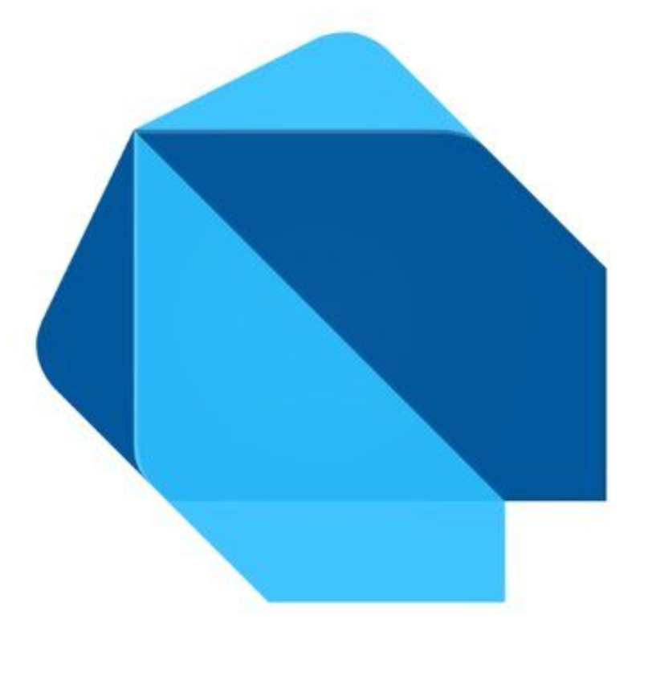
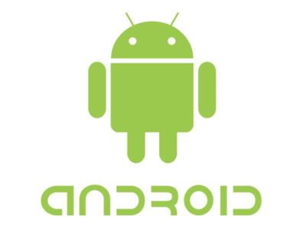
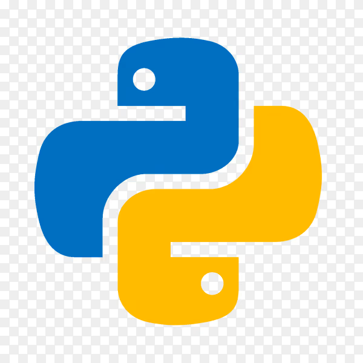
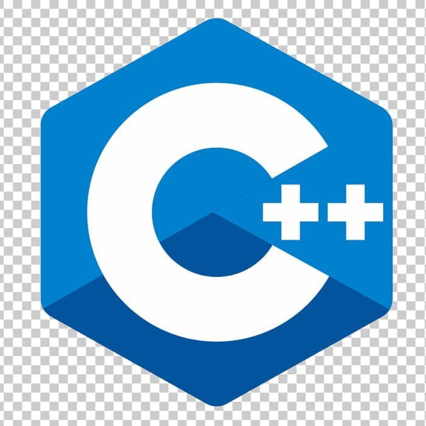
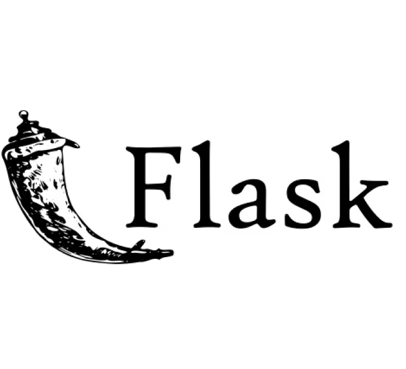
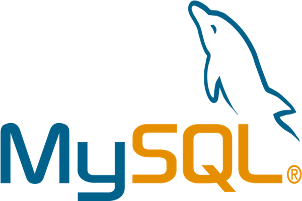
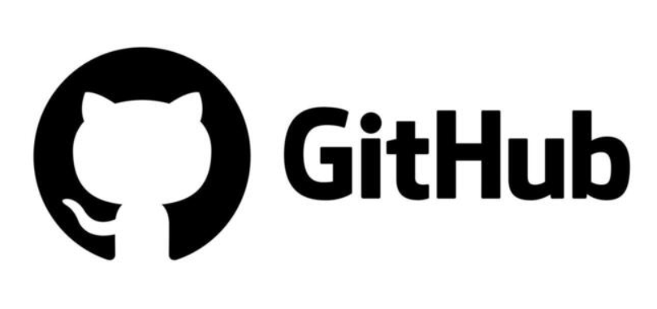
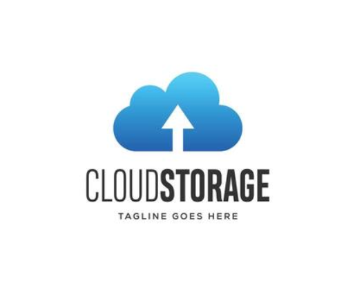

Native Android & Media Systems
Low-latency media pipeline architecture using AndroidX Media3 (ExoPlayer & Transformer), OpenGL ES 3.0 fragment shaders, and bidirectional Platform Channels.
Hello, I’m
Computer Science Engineering Student building intelligent applications, scalable cloud solutions, and modern digital experiences that turn ambitious ideas into useful products.
Selected Engineering Work
From native Android media pipelines and C++ 3D game engines to autonomous AI agent workflows and distributed full-stack systems — a complete catalog of 11 practical software engineering projects.
Engineering Pillars
Disciplined software engineering applied across low-level media pipelines, intelligent automation, cross-platform clients, and distributed backends.
Low-latency media pipeline architecture using AndroidX Media3 (ExoPlayer & Transformer), OpenGL ES 3.0 fragment shaders, and bidirectional Platform Channels.
Multi-stage workflow automation using n8n, OpenHands AI, Python script hooks, and Google Gemini LLM prompting with regional Tanglish nuance and human verification gates.
Production Flutter engineering with Riverpod state management, background lifecycle audio services, offline-first local persistence, and Play Store release hygiene.
High-throughput asynchronous REST APIs built with FastAPI and Flask; normalized relational database modeling, query optimization, and connection pooling in PostgreSQL and MySQL.
C++ native engine porting for Android via CMake and Android NDK; OpenGL ES 3D rendering loops, Squirrel scripting bindings, and ad-hoc socket multiplayer networking.
Containerized deployment with Docker, database hosting on Railway, serverless backend management on Render, AWS foundational cloud practices, and Git CI/CD hygiene.
Academic & Professional Background
Formal academic training in Computer Science Engineering alongside industry internships, robotics competitions, and verified cloud certifications.
Current Cumulative Grade Point Average: 8.50 / 10.00. Core coursework in Data Structures, Algorithms, Object-Oriented Programming, Database Management Systems, Computer Networks, and Operating Systems.
Trained on applied machine learning pipelines, dataset preprocessing, computer vision algorithms, and integration of neural networks into user-facing software.
Hands-on systems engineering covering microcontroller interfacing, sensor telemetry, real-time embedded communication, and autonomous robot navigation.
Cloud architecture, shared security responsibility, compute, storage, and IAM configuration.
Advanced data structures, algorithmic problem-solving, and functional programming in Python.
Virtualization, microservices architecture, and cloud service models (IaaS, PaaS, SaaS).
Engineering Philosophy
I am a Computer Science Engineering student with an active builder mindset. Rather than limiting myself to surface-level web interfaces, I enjoy bridging the gap between high-level reactive client architectures (Flutter, FastAPI, n8n workflows) and low-level native systems (C++, Android NDK, AndroidX Media3, and OpenGL ES 3.0 shaders).
My projects reflect practical software engineering: shipping published apps to the Google Play Store, implementing local ad-hoc Wi-Fi multiplayer games without centralized server dependencies, creating context-aware AI pricing algorithms for regional farmers, and automating complex meme generation workflows with regional cultural nuance.
Toolbox
A versatile, disciplined stack across mobile platforms, low-level native languages, databases, orchestration agents, and cloud infrastructure.

DartLanguage
AndroidNative SDK
PythonAI & Backend
C++Systems & NDK
FastAPI/FlaskAsync Backends
PostgreSQL/SQLRelational DB
Git & GitHubVersion Control
AWS & DockerCloud & DevOpsLet’s Connect
I’m actively available for software engineering internships, native mobile development, AI integration, systems architecture, and engineering collaborations.
Start a Conversation